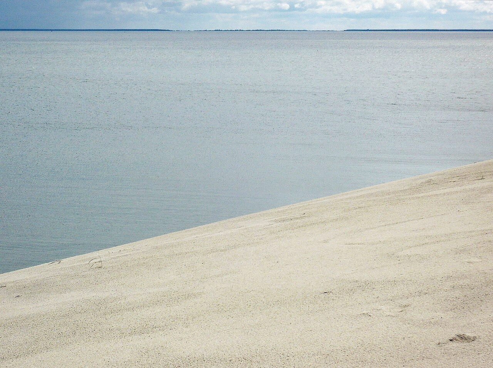
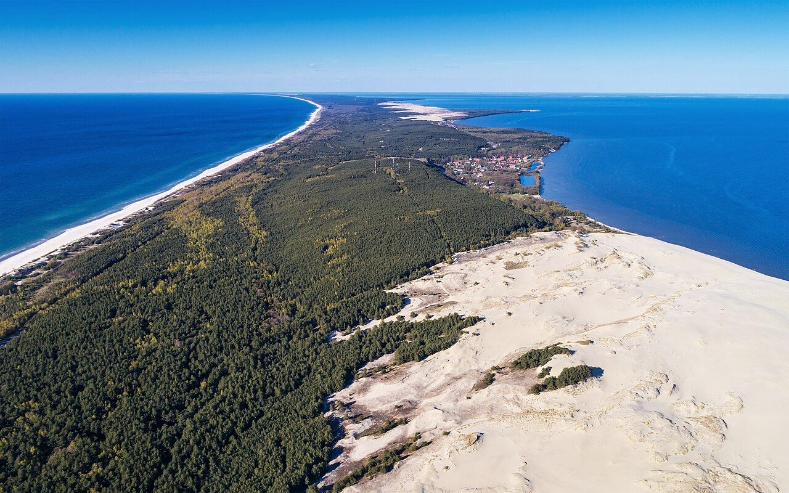
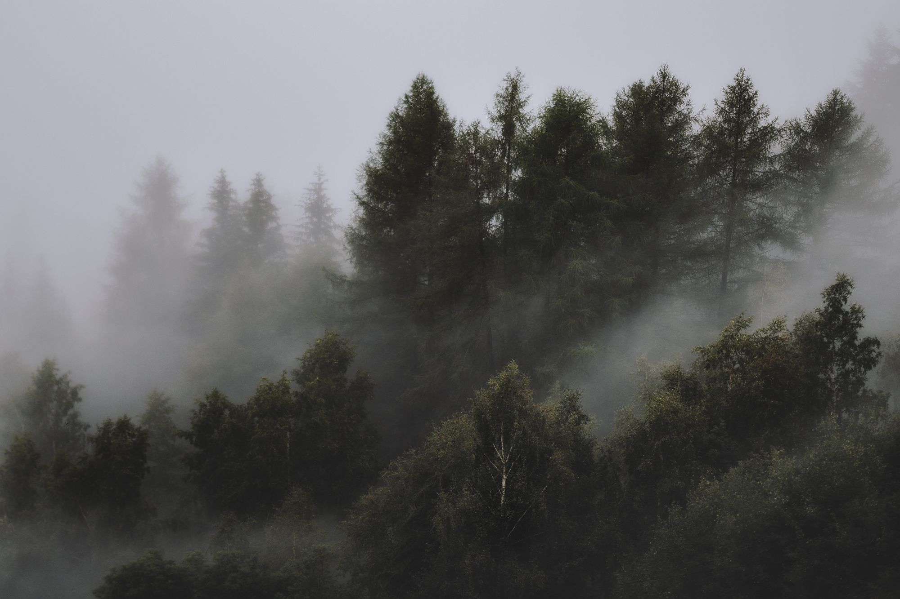

55.28° N · 20.96° E — Балтика
Куршская
коса
98 километров песка между морем и небом. Полуостров, который ветер переписывает каждый день.
вниз, на север
55.28° N · 20.96° E — Балтика
98 километров песка между морем и небом. Полуостров, который ветер переписывает каждый день.
↳ О месте
Полоса дюн шириной местами всего 400 метров держит равновесие между солёной Балтикой и пресным заливом. Люди веками учились не побеждать песок, а договариваться с ним — засаживая склоны соснами и травой.

Самая высокая кочующая дюна Европы названа в честь Франца Эфа — человека, который остановил движущиеся пески соснами и травой. С деревянных настилов видно сразу и море, и залив.

Сосны, свернувшиеся в кольца и спирали, будто застыли посреди движения. Единой разгадки их танца нет до сих пор — и в этом половина магии.

Дважды в год над узкой полосой суши проходят до десяти миллионов птиц. Станция «Фрингилла» считает и кольцует их с 1901 года — одна из первых в мире.

С одной стороны — открытая Балтика с её штормами и янтарём. С другой, в паре сотен метров, — тихий пресный залив, тростник и рыбацкие лодки. Коса живёт между двумя водами.







Золотой час
Когда солнце уходит в Балтику, песок становится золотым, а залив — зеркалом. Коса открыта круглый год; самые тёплые краски — с мая по сентябрь.
Спланировать поездку →